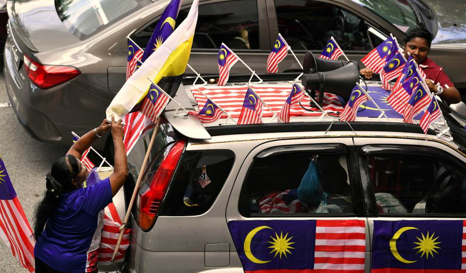

IPOH: Setiap kali menjelang Ogos, ratusan Jalur Gemilang dan bendera negeri Perak akan berkibar megah di sebuah unit rumah pangsa Taman Harmoni, di sini
Tidak hanya di luar rumah, pemilik kediaman itu, G Rajspari, 62, atau lebih mesra dipanggil Ratha, juga memasang bendera kebangsaan di dalam rumah dua bilik berkenaan bagi menyambut Hari Kebangsaan dan Hari Malaysia.
"Idea memasang bendera timbul semasa pandemik COVID-19. Semasa itu, pergerakan terbatas dan semua kena duduk di rumah, jadi saya menghias rumah dengan bendera untuk mengisi masa terluang," katanya.
Semangat patriotik Ratha yang juga orang kurang upaya (OKU) turut dizahirkan dengan memasang Jalur Gemilang pada Perodua Kembara miliknya, yang dibawa mengelilingi bandar raya Ipoh dengan penuh rasa bangga.
"Paling saya seronok dan terharu ialah apabila melihat orang ramai senyum atau melambai, malah ada yang memberi tabik hormat apabila melihat kibaran Jalur Gemilang yang terdapat pada kereta saya," katanya.
Ibu tiga cahaya mata itu tidak lokek membeli bendera yang turut diedarkan kepada orang ramai, terutama generasi muda bagi menaikkan semangat mengenai erti kemerdekaan.
Tidak ketinggalan mengibarkan Jalur Gemilang, pesara bomba, Rozadin Ibrahim yang turut membina replika Menara Berkembar Petronas dan Menara Kuala Lumpur daripada botol plastik di pekarangan rumahnya di Kampung Bahagia, Sungai Siput dekat sini.
Rozadin, 67, yang dibantu isteri, Fauziah Ahmad, 63, turut mengecat bekas telur dengan warna merah dan putih dengan tulisan 'Merdeka 67' sebagai simbolik kepada sambutan Hari Kebangsaan ke-67 tahun ini.
"Kami membelanjakan sekitar RM500 untuk membeli Jalur Gemilang dan bendera negeri. Saya juga menggantung poster semua perdana menteri, semuanya dibeli dalam talian kerana lebih mudah," katanya yang mengambil masa seminggu untuk menggantung dan membina replika itu.
Sementara itu, Fauziah berkata, tujuh anak serta cucu mereka seronok apabila pulang ke rumah, baru-baru ini, selepas melihat suasana sekitar kediaman yang berwarna-warni dihiasi bendera dan replika itu.